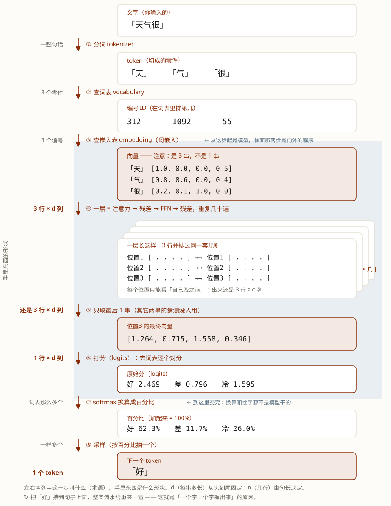

模型是怎么"想"出下一个字的。这一版只走完整流程；细节在进阶版，用括号标出来了。
你和模型聊天的时候，有没有闪过这些念头：
看着很聪明，其实拆开非常朴素：大模型就是一个程序。它每一刻只在做一件事——给定已经写出来的字，猜下一个字。猜完接到后面，再猜下一个；反反复复，就成了整篇文章。
一个字一个字的蹦，不是因为它慢，而是它每次就只猜一个。
学完这课，你能：把"从你敲的字到下一个字"这条链完整讲一遍，并且说清它为什么要一个一个蹦。
先说一个前提：计算机只认数字。它存的一切实打实都是数字，看不懂「天」这个字——所以要让计算机处理一句话，第一步一定是把字换成数字。
换出来的这一串数字，我们给它起名叫向量——一串数字，仅此而已（别当数学术语看，它在这儿不参与任何计算，只是"每个字在数字世界里的一串代号"）。
这就是这一课的主线：整条路上流动的只有向量这一个东西。字进来先变成向量，中间每一步都是把向量里的数字改一改，只有最后一步才变回字。（一串一串叠起来的样子叫"表"，第 1 节会看到——但那是许多根向量摞在一起，不是另一种东西。主线只认向量这一件。）
所以这一课其实就是一句话：模型怎么把一堆数字变来变去，最后变出下一个字。接下来我们一节一节走。
模型的世界里没有字，只有数字。所以文字要先"翻译"成数字，中间是两步查表：
文字 → token（零件）→ 编号 → 向量
文字 「天气很」
↓ 分词 (tokenizer)
token 「天」 「气」 「很」
↓ 查词表 (vocabulary)
编号 312, 1092, 55
↓ 查嵌入表 (embedding)
向量 [1.0, 0.0, 0.0, 0.5]
[0.8, 0.6, 0.0, 0.4]
[0.2, 0.1, 1.0, 0.0]（上面全是示意：编号是编的，向量也只留了 4 个数——真实模型的向量有几千个。）
上面那张图里，一个 token 对应一行向量——「天气很」是 3 个 token，所以是 3 行。把所有行摞起来，才是一张「n 行 × d 列」的数字表（n ＝ token 数，d ＝ 每串向量的长度），这张表学名叫张量（tensor）（二维的也叫矩阵 matrix）。
宽度 d 是固定的，长度 n 跟着 token 数变——下一句多一个字，表就多一行，别的什么都不用改。
所以，送进模型、开始被计算的就是这整张表。这一节先说它长什么样，下一节再看模型拿它做什么。
（为什么非得是"一堆并排的向量"、不能把 n 串拼成一根大向量？→ 看「为什么是 n 行 × d 列」）
接下来，这张表就进入模型的核心部分了。核心部分是一堆堆叠在一起的盒子——一个盒子叫一层，正式名称是 Block，真实模型有几十个这样的盒子摞起来。
每个盒子干的事完全一样，里面都是同样四步：注意力（看一眼前文）→ 残差（把原来的也留一份）→ FFN（再细改一遍）→ 残差。整摞盒子进进出出都是同样形状：进去时是 n 行 × d 列，出来还是 n 行 × d 列——形状一路不变，变的只是里面那些数字。
但模型不只是这一摞盒子。完整的模型是查嵌入表（上一节那一步）＋ 这一摞 Block ＋ 最后那张打分表。再往左的分词、查词表是门外的程序（配套的小工具，不算模型）；再往右的换算成百分比、抽字，也不是模型干的——模型只交出那张分数表就下班了。（分词、查词表这两步到底算不算模型的一部分？→ 看「什么算模型」）
整条链长什么样，先看这张总图。九站，从你敲的字一路走到下一个字。

图先给你一个印象，每一步具体在干嘛，下一节一段一段说。这里先只盯一件最要紧的事：右边那一列形状全程没变——第 ③ 步查完嵌入表是「3 行 × d 列」，第 ④ 站（那几十层）走完还是 3 行 × d 列；一直到第 ⑤ 站才缩成 1 行。这就是上面说的"形状一路不变"。
每个位置都举一个"我要找什么"（Query），去和自己以及它之前每个位置的"能不能被对上"（Key）比相似度，再按比重把大家的"能给出什么"（Value）加起来。看不到后面——后面还没写出来。
结果还是一个向量，但含义变了：从"我本来的理解"变成"我看过前文之后的理解"。（为什么必须看不到后面？）
新的向量 = 原来的向量 + 从别人那里取来的向量别覆盖，只增补——免得抄着抄着把自己弄丢了。
注意力只是把别人的信息粗略混进来。FFN 接着对这串数字做一次更细的改写：出现某种模式，就往里补充对应的信息，把那个概念往上抬。（它到底在改什么？→ 看「FFN 到底在改什么」；论文也爱把 FFN 形容成一张"键值记忆"表，那和注意力那份 K/V 不是同一个东西——→ 第 2 课进阶 · Q4）
它不是在"检查"什么——要检查的那个结果，这时候还没算出来呢（要到最后一站才发生）。
"注意力 → 残差 → FFN → 残差"合起来叫一层。真实模型叠几十层，每一行数字被反复修改几十遍，一次比一次更贴近"该说什么"。
只取最后一行，去词表里逐个对分（叫 logits 原始分），换算成百分比（叫 softmax），按百分比抽一个（叫 采样 sampling）。
抽出来的那一个，就是下一个 token。
（一个容易跳过的细节：抽出来的其实是它的编号（ID），还不是一根向量。要变回向量，得拿这个编号再去查一次嵌入表——这就是下一次那张表多出来的那一行从哪来。第 2 课接着讲这一轮。）
回到开头那个问题：它是"想好了再说"，还是"边写边想"？边写边想——它没有另一条"先想好"的路径，只有刚才这一条。
每蹦一个字，它内部就把整条流水线从头完整走一遍：n 行的表进摞、穿过几十层、回到出口。每个位置其实都猜了一个字，但只有最后一行那个被采用，其余的猜完就丢掉。挑出来的接在句子后面，下一个字再从头走一遍——而这一遍里，表的宽度从头到尾是 d，只是行数多一行（3 行 → 4 行 → 5 行…）。
（顺带钉一个最容易混的：一个字 ≠ 一次请求。你发一次请求、它回一整段话，里面就是这样重走了很多遍。第 2 课会把"第一遍"和"后面那些遍"为什么不一样拆开讲。）
整条流水线只有一条，一次只吐得出一个字；吐完把字接上去再走一遍——所以你看到的是"一个字一个字往外蹦"。
脚本在工作区：exercises/llm/0001-tiny-attention.py。它把上面的链全打印出来。
python exercises/llm/0001-tiny-attention.pyWindows 终端若中文乱码，先执行 chcp 65001。数字都是手编的、故意很小，只为看清流程。下面是输出摘录（跑了就有完整的）。
[2] 和每个 Key 比相似度（逐位相乘再相加；越大越相关）
「天」: 1.0×0.5 + 0.0×0.1 = 0.500
「气」: 1.0×0.9 + 0.0×0.2 = 0.900
「很」: 1.0×0.2 + 0.0×0.0 = 0.200
[3] 把分数换算成百分比（softmax），这组百分比就是「权重」
「天」: 0.309 = 30.9%
「气」: 0.461 = 46.1%
「很」: 0.229 = 22.9%
[4] 按权重把每个 Value 加起来（这一步就是「交流」）
= [0.679, 0.323, 0.115, 0.200] <- 还是一串数字，但已经「看过前文」
[7] 打分（logits）：拿最终向量去词表里逐个对分
「好」: 2.469 「差」: 0.796 「冷」: 1.595
[8] 换算成百分比（softmax）
「好」: 62.3% 「差」: 11.7% 「冷」: 26.0%
[9] 采样：按百分比抽一个（像按比例抽奖）
-> 「好」看第 [3] 步：「很」把最多的注意力给了「气」（46.1%），所以最后挑出「好」就顺理成章。多跑几次会抽到不同的字——那就是"采样"。
Q1 一次模型调用，喂进去的是什么？
Q2 注意力这一步，本质上在做什么？
Q3 为什么模型"一个字一个字往外蹦"？
上面这些够你看懂全貌了。读的过程中如果冒出疑问，点对应的链接就行——不用从头看进阶版。
softmax(QKᵀ/√dₖ)V，就是第 3 节「注意力」那三句话的写法，现在看不懂没关系。）
同课进阶：进阶版 · 十个问题
前置：LLM 底层 · 第 0 课 · 模型是怎么学出来的
顺着往下：LLM 底层 · 第 2 课 · 一次请求的两段 · 第 3 课 · KV Cache 与缓存命中
主线：Agent 原理篇 · 第 1 课 · Agent 到底是什么？
术语表：张量 · 向量 · token · Attention · 层 · Logits / Softmax / 采样